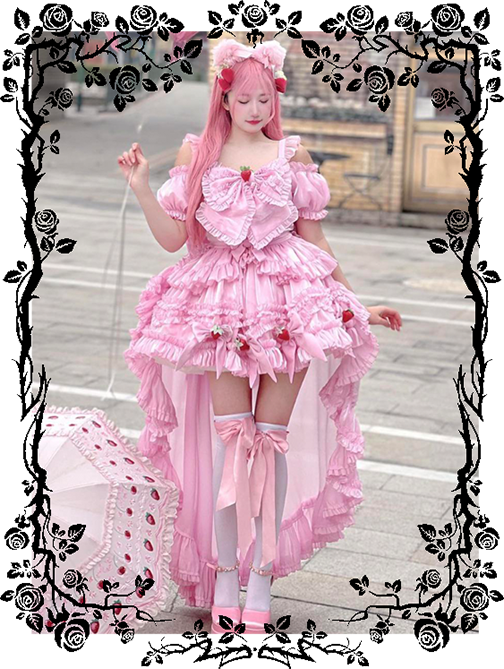
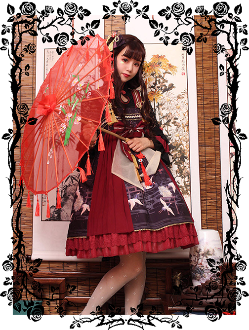
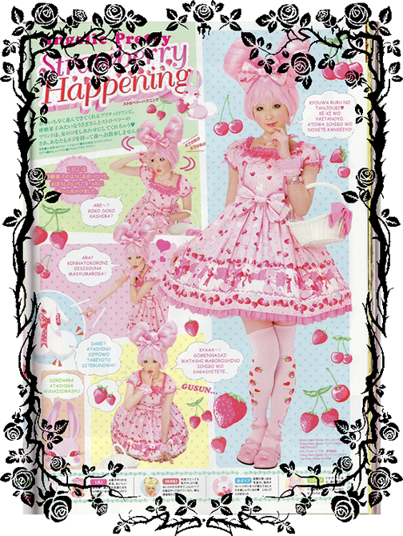
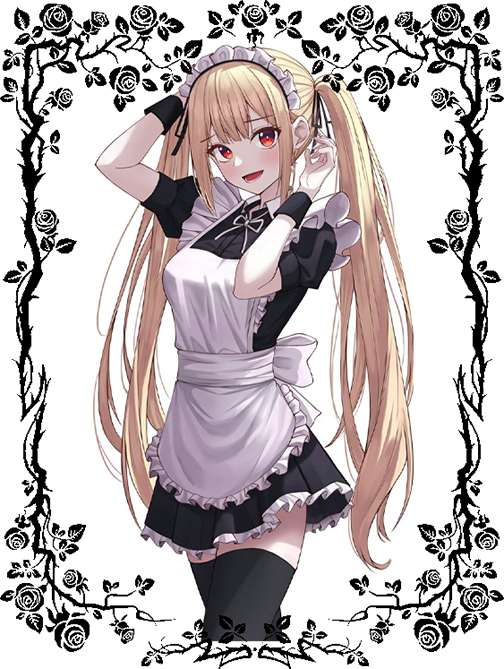
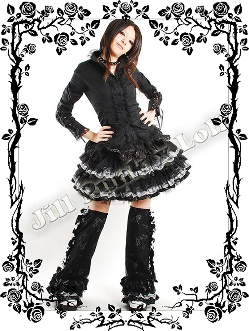
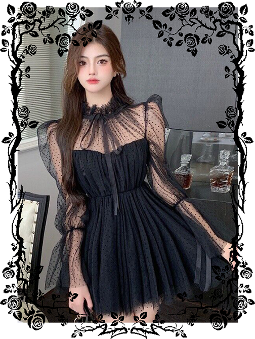
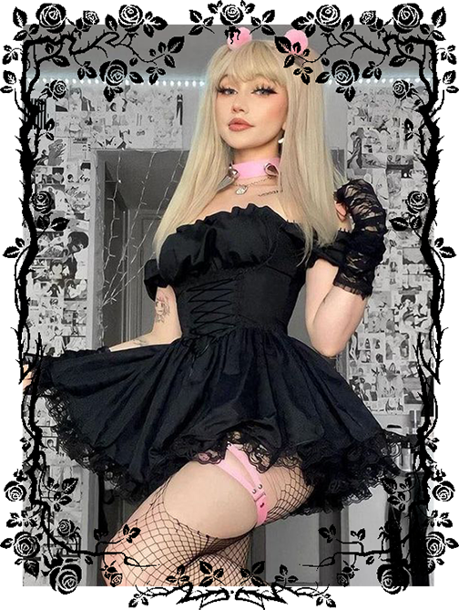

Lolita fashion has very specific guidelines it abides to, including fabric and lace quality, allowed skirt length, minimum skin exposure and special garment design. Some argue
that this gives the fashion less room for creative interpretation, but this is usually not the case. However, it's often hard for newcomers to separate the good qualities of an
item from the bad. So to help here is a simple guide telling you your do's and don't of Lolita Fashion.
1. DO FOLLOW A SENSE OF MODESTY

Modesty should also be kept in Lolita through the use of bloomers, blouses, stockings, etc. Cleavage shouldn’t show, nor should the whole leg. The idea with Lolita is to look
cute and elegant and you shouldn’t show off too much skin. So this means no cleavage, no maid elements, unless done tastefully (like Angelic Pretty's Fruit Parlor series). And
skirts are usually around knee-length (Ero/Punk/Casual an exception) and should be able to accomodate a petticoat for an A-line or cupcake silhouette.
2. DO YOUR MAKEUP/HAIR WITH SOPHISTICATION

One more big thing to take note of is hair and makeup. Lolita is a cute and elegant fashion, no matter what style you’re doing, and your hair and makeup should reflect that.
Darker makeup can be worn but make sure it’s good quality as with everything else. Gothic makeup does not equal Mana's whiteface/blue lipstick combination but neutral makeup
is a thing of the past, regardless all makeup should still be kept somewhat sane. Aim for high-quality wigs, it should not look like you're wearing a cap made out of plastic
strands. Think twice before deciding on a colour for your wig, such as neon green for Gothic Lolita is probably not the best choice, and don't forget to take your skintone into
consideration as well. You can experiment with your makeup to match your coords or you can just have a basic, more natural look that you wear with everything, just keep elegance
in mind and try not to look like a clown.
3. DO KEEP YOUR LOVE OF JAPAN OUT OF LOLITA

Just because Lolita comes from the magical land of Japan doesn't mean you have to insert as many Japanese elements into a coordinate as you can. No paper umbrellas, no Japanese
style brocades, no geisha makeup, and you know what, if you're a newbie to Lolita I'm going to say no Wa-loli. Wa-loli is a sub-style of Lolita that involves kimono inspired
dresses, this is a rather difficult style to pull off without looking like you're obviously in costume. So please, don't make your first Lolita dress a Wa-loli one.
4. DO FOLLOW THE BASICS

Something else that beginners tend to forget is the basic foundations of Lolita fashion. The shape, the length, and the concept of modesty. These are three of the most important
aspects of Lolita that are often forgotten. The standard for Lolita is for the skirt/dress to be around knee length. In certain styles it can be a little shorter (but should
never be short enough that it becomes a problem to bend over in) and in other styles (such as Classic Lolita) it can be a bit longer, sometimes calf-length. They should also
have a shape given by a petticoat, meaning either a bell shape or an A-line shape depending on the style of the dress. Petticoats should be the proper Lolita shape and should
be about an inch shorter than the skirt so they don’t peek out the bottom. Also, when trying to achieve the proper Lolita shape, remember where everything goes. Lolita skirts
are meant to sit at the natural waist (the smallest part of the waist), not the hips.
1. DON’T LISTEN TO ANIME

So the first thing you need to learn is to not let anime influence the way you look at Lolita. The characters from Rozen Maiden aren’t Lolitas. Chii from Chobits is not a
Lolita. Misa Amane from Death Note is not a Lolita. There are very few proper representations of Lolita in anime. (There are some, but not many.) So as much as you may love anime,
leave that love of anime out of Lolita as much as possible. Lolita is NOT cosplay and should not be treated as such. Now that we have that out of the way, let's take a look at
elements of an outfit that can make it ita. Let’s start with the worst offender.
2. DON’T BECOME THE LACE MONSTER

Lace! Lace everywhere! Black lace, white lace, huge lace, thin lace, dresses dripping in lace! Here’s a tip for you: more lace does not make something more Lolita. This is
probably one of the most common problems, especially when it’s a black dress with a lot of white lace. At one point that was the height of Gothic Lolita fashion, but even so,
it was still good quality. If you’re using lace you pulled out of the $1 bin at the fabric store, it’s probably not good quality lace and shouldn’t be used on anything for Lolita.
Another mistake that often tends to be done in the same dresses where lace is running rampant is corset lacing. No, not functional corsets, but corset lacing put in the front of
a dress for decoration. The corset lacing shouldn’t cover your entire chest from side to side and it definitely shouldn’t cover the entire front of the chest. A little in the
middle is all that’s needed to get the point across.
3. DON’T MAKE A LOLITA OUTFIT WITH NON-LOLITA CLOTHES

You see your first Lolita picture, and instantly you are in love! Oh God, how you want to look that way RIGHT NOW! So you run to your closet and look for your fanciest skirt
and nicest blouse. Voilà! This sort of looks like that doesn't it? No, it actually doesn't. Very few "normal" clothes look Lolita, blouses and accessories can usually be found
in a closet, but it is the skirt that is going to kill the look. Nearly every skirt I've seen in a good Lolita coordinate was made specifically to be Lolita. If you try to find
Lolita clothes in your pre-existing closet, you're just going to end up like you're going to church or a fancy dinner. Which, of course, isn't a bad thing, but it's definitely
not Lolita.
4. DON’T TRY TO SEX IT UP

If you want to wear Lolita because you're looking for a new and sexy (in an erotic pole dancer sort of way) style to wear, you don't know the first thing about the fashion,
and maybe Lolita isn't for you. To avoid being labelled an Ita, don't show off your boobs (I'm not going to say "no cleavage, ever!" because sometimes that just can't be helped),
keep your upper thighs and butt covered, the belly should never show, and don't start sucking seductively on lollipops.